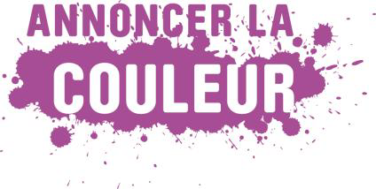

Matériel digital, enseignement et pratiques pédagogiques d’ECM : détails pratiques sur la réflexion
Qui ?
Vous êtes responsable pédagogique d’une organisation d’ECM qui développe des projets en lien avec le digital
? Vous êtes enseignant et utilisez les nouvelles technologies dans vos pratiques ? Vous travaillez
directement avec les enseignants en tant que coupole ou programme d’appui et êtes sensible à la réflexion sur
le digital ? Alors rejoignez notre groupe de travail, vous ou l’un de vos collaborateurs !
Quoi ?
Annoncer la Couleur souhaite initier avec vous une réflexion sur "l’usage du matériel digital dans l’enseignement
et les pratiques pédagogiques d’éducation à la citoyenneté mondiale".
Un groupe de travail restreint sera constitué et se réunira à quatre reprises autour de 3 grands axes :
-
État des lieux : les nouvelles technologies dans l’enseignement en Wallonie et à Bruxelles
(équipements, pratiques, politiques, etc.) et les expériences concrètes de matériel digital déjà menées par des
organisations d’éducation à la citoyenneté
mondiale
-
Partage d’expériences concrètes d’enseignants qui utilisent du matériel digital en classe
-
Conclusions :
Quel matériel digital d’éducation à la citoyenneté mondiale est-il intéressant de développer et d’utiliser, en
tenant compte du contexte classe mais aussi de la façon dont les nouvelles technologies peuvent influencer le
matériel pédagogique ?
Au-delà de recommandations pour les divers acteurs, le résultat escompté est de poser les bases d’un
séminaire à destination des enseignants qui prendra place début 2013.
Quand ?
-
7 mai 2012 : clôture des inscriptions au groupe de travail
-
Fin mai 2012 : communication de la sélection finale du groupe de travail par Annoncer la Couleur
-
21 juin 2012 : première rencontre du groupe de travail
-
Septembre-décembre 2012 : les rencontres seront fixées en accord avec les membres du groupe
-
Début 2013 : séminaire à destination des enseignants
Implication souhaitée ?
Assiduité, participation active et motivée, apport d’expériences et préparation des 4 rencontres précitées
Comment s'inscrire ?
Merci de nous envoyer avant le 7 mai 2012 via marie.vanhauw@btcctb.org
les informations suivantes:
-
Organisation / nom et prénom du participant / e-mail et numéro de téléphone
-
Pourquoi souhaitez-vous participer à ce groupe de travail ? (en quelques mots)
-
Possédez-vous des expériences concrètes déjà menées ou en cours de réalisation en lien avec les nouvelles
technologies ?